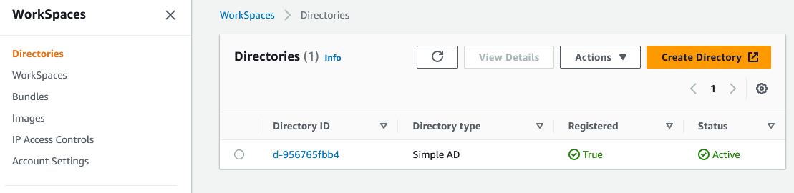
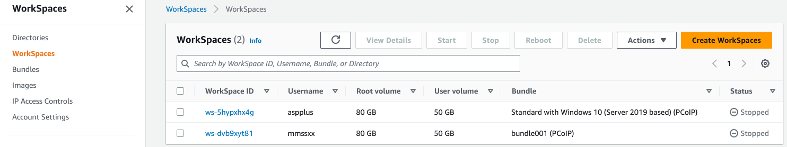
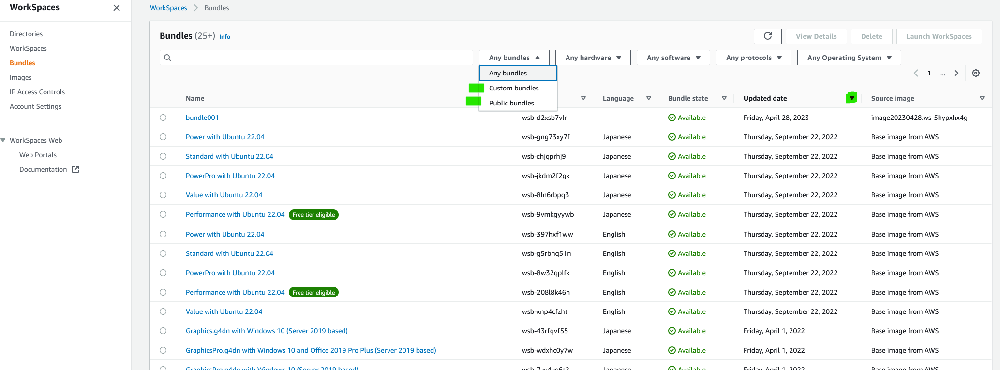
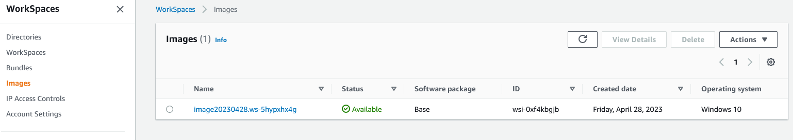

Amazon WorkSpaces を試した
- WorkSpaces を構成する要素
- WorkSpace を更新して最新状態を保つ
WorkSpaces を構成する要素
Directories

WorkSpaces

- 後述の「バンドル」をテンプレートとして仮想マシンを作り、それ（仮想マシン）と利用者を組み合わせるとワークスペースとなる
- Root volume は C: ドライブ
- User volume は D: ドライブ
Bundles

- ワークスペースを作る際のテンプレートとなるのが「バンドル」
- 後述の「イメージ」とハードウェア (CPU, Memory, Storage) を組み合わせてバンドルを構成する
- 自分が作ったバンドルは「カスタム バンドル」と呼ぶ
- AWS が作ったバンドルは「パブリック バンドル」と呼ぶ
Images

- ワークスペースを選んで、[Create image] をクリックすると「イメージ」が生成される。
- ワークスペースの仮想マシンを sysprep して C: ドライブを保存したものがイメージであろう。
WorkSpace を更新して最新状態を保つ
最初の作業
- パブリックなバンドルにて [Launch WorkSpaces] をクリックし、ワークスペース (ws001) を作る。このワークスペースはテンプレート的な役割を担う。
- ws001 の C: ドライブにアプリをインストールする。
- アプリのインストールが済んだら、ws001 からイメージ (im001) を作り、イメージからバンドル (bn001) を作る。
- bn001 にて [Launch WorkSpaces] をクリックし、利用者が業務で使うワークスペースを作る。
WorkSpace の移行
- ws001 にてアプリをバージョン アップする。
- アプリのバージョン アップが済んだら、ws001 からイメージ (im002) を作り、イメージからバンドル (bn002) を作る。
- 利用者が業務で使うワークスペースにて [Migrate WorkSpaces] する。移行先は bn002 である。
WorkSpace の移行で何が起こっているのか
あまりに複雑なため、理解するには各人が WorkSpace の移行 - Amazon WorkSpaces を読みながら手を動かして試す必要があると思うが、以下に要点を記す。
- 移行に成功した場合、移行元ワークスペースは消える
- 移行に失敗した場合、移行元ワークスペースは残る
- 移行先となるワークスペースが新規に作成される
- 移行先として選んだバンドルの C: のコピーが移行先の C: に割り当てられる
- 移行元ワークスペースの C: に格納されているものを移行先に持っていくことはできない
- 移行元の D: の内容を移行先に持っていくためには、移行元ワークスペースにて自動の１２時間おきスナップショットを経ておく必要がある
- スナップショットから移行先の D:\Users\%USERNAME%MMddyyTHHmmss%.NotMigrated にコピーされる
- プロファイル D:\Users\%USERNAME% が新規に作成される
- D:\Users\%USERNAME%MMddyyTHHmmss%.NotMigrated から D:\Users\%USERNAME% にファイルが移動される。robocopy を使っているようだ
- D: の全部が移行されるわけではない。
- 移行されるのは D:\Users\%USERNAME%\Desktop や D:\Users\%USERNAME%\Documents 等に限定されている
- 移行には長時間を要する
- 移行すると、エクスプローラーの設定等、色々な情報が飛ぶ（消える）
テンプレートとしてのワークスペース、イメージ、バンドルを更新して最新状態を保つのはよいのだが、利用者に渡したワークスペースを更新して最新状態を保つのは現実的ではないと感じた。
2023/4/29 初版